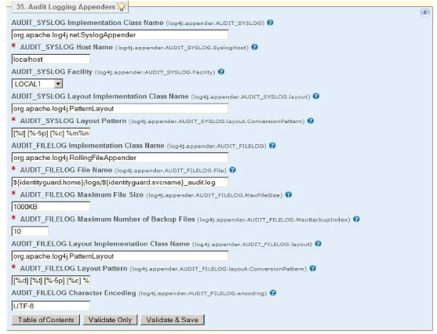

|
IdentityGuard Server 12.0 Administration Guide |
|
IdentityGuard Server 12.0 Administration Guide |
Use the following procedure to change the audit logging properties in the Entrust IdentityGuard Properties Editor.
To change audit logging properties
1. Start the Entrust IdentityGuard Properties Editor. (See Log in or out of the Properties Editor.)
2. On the Table of Contents, click Audit Logging Appenders.
3. To change audit properties when you are using Syslog for your audits, update the following properties as required:
a. Set the AUDIT_SYSLOG Host Name property to change the default Syslog host that logging information is sent to. You can specify a host name or IP address. Append a colon and nondefault port number to the host, if required.
b. Set the AUDIT_SYSLOG Facility property to define the Syslog facility used for audit logs. Select the option from the drop-down list that best describes what facility on the system originated the message. The default is Local1.
c. Set the AUDIT_SYSLOG Layout Pattern property if you need to change the format of the converted logging event. Please see the log4j documentation for further information.

4. To change audit properties when you are using the rolling file appender for your audits, update the following properties as required:
a. Set the AUDIT_FILELOG File Name property if you need to change the location of the audit log.
b. Set the AUDIT_FILELOG Maximum File Size property to change the maximum size in kilobytes that a log file can reach before it rolls over to a new empty file. The default is 1000 KB.
c. Set the AUDIT_FILELOG Maximum Number of Backup Files property to change the number of previous log files to keep as a history. The default is 10.
d. Set the AUDIT_FILELOG Layout Pattern property if you need to change the format of the converted logging event. Please see the log4j documentation for further information.
e. Set the AUDIT_FILELOG Character Encoding property to specify the character encoding used when writing logging events to the log file. If you do not specify a value for this property, logging events are written with the system's default character encoding, UTF-8.
5. Click Validate & Save.